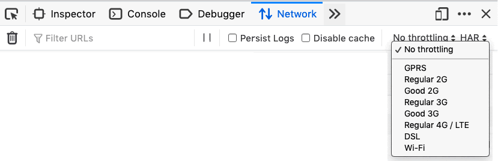
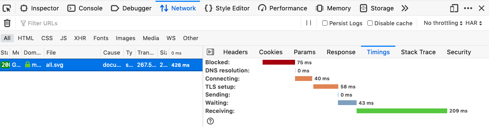

Latency is the time it takes for a packet of data to travel from source to a destination. In terms of performance optimization, it's important to optimize to reduce causes of latency and to test site performance emulating high latency to optimize for users with lousy connections. This article explains what latency is, how it impacts performance, how to measure latency, and how to reduce it.
Latency is generally considered to be the amount of time it takes from when a request is made by the user to the time it takes for the response to get back to that user. On a first request, for the first 14Kb bytes, latency is longer because it includes a {{glossary('DNS')}} lookup, a {{glossary('TCP handshake')}}, the secure {{glossary('TLS')}} negotiation. Subsequent requests will have less latency because the connection to the server is already set.
Latency describes the amount of delay on a network or Internet connection. Low latency implies that there are no or almost no delays. High latency implies that there are many delays. One of the main aims of improving performance is to reduce latency.
The latency associated with a single asset, especially a basic HTML page, may seem trivial. But websites generally involve multiple requests: the HTML includes requests for multiple CSS, scripts, and media files. The greater the number and size of these requests, the greater the impact of high latency on user experience.
On a connection with low latency, requested resources will appear almost immediately. On a connection with high latency, there will be a discernible delay between the time that a request is sent, and the resources are returned. We can determine the amount of latency by measuring the speed with which the data moves from one network location to another.
Latency can be measured one way, for example, the amount of time it takes to send a request for resources, or the length of the entire round-trip from the browser’s request for a resource to the moment when the requested resource arrives at the browser.
To emulate the latency of a low bandwidth network, you can use developer tools and switch to a lower end network connection.

In the developer tools, under the network table, you can switch the throttling option to 2G, 3G, etc. Different browser developer tools have different preset options, the characteristics emulated include download speed, upload speed, and minimum latency, or the minimum amount of type it takes to send a packet of data. The approximate values of some presets include:
| Selection | Download speed | Upload speed | Minimum latency (ms) |
|---|---|---|---|
| GPRS | 50 Kbps | 20 Kbps | 500 |
| Regular 2G | 250 Kbps | 50 Kbps | 300 |
| Good 2G | 450 Kbps | 150 Kbps | 150 |
| Regular 3G | 750 Kbps | 250 Kbps | 100 |
| Good 3G | 1.5 Mbps | 750 Kbps | 40 |
| Regular 4G/LTE | 4 Mbps | 3 Mbps | 20 |
| DSL | 2 Mbps | 1 Mbps | 5 |
| Wi-Fi | 30 Mbps | 15 Mbps | 2 |
Also, on the network tab, you can see how long each request took to complete. We can look at how long a 267.5Kb SVG image asset took to download.
When a request is in a queue, waiting for a network connection it is considered blocked. Blocking happens when there are too many simultaneous connections made to a single server over HTTP. If all connections are in use, the browser can't download more resources until a connection is released, meaning those requests and resources are blocked.
DNS resolution is the time it took to do the {{glossary('DNS lookup')}}. The greater the number of hostnames, the more DNS lookups need to be done.
Connecting is the time it takes for a {{glossary('TCP handshake')}} to complete. Like DNS, the greater the number of server connections needed, the more time is spend creating server connections.
The {{glossary('TLS')}} handshake is how long it took to set up a secure connection. While a TLS handshake does take longer to connect than an insecure connection, the additional time needed for a secure connection is worth it.
Sending is the time taken to send the HTTP request to the server.
Waiting is disk latency, the time it took for the server to complete its response. Disk latency used to be the main area of performance concern. However server performance has improved as computer memory, or CPU, has improved. Depending on the complexity of what is needed from the server, this can still be an issue.
Receiving is the time it takes to download the asset. The receiving time is determined by a combination of the network capacity and the asset file size. If the image been cached, this would have been nearly instantaneous. Had we throttled, receiving could have been 43seconds!
Network latency is the time it takes for a data request to get from the computer making the request, to the computer responding. Including the time it takes for a byte of data to make it from the responding computer back to the requesting computer. It is generally measured as a round trip delay.
Disk latency is the time it takes from the moment a computer, usually a server, receives a request, to the time the computer returns the response.